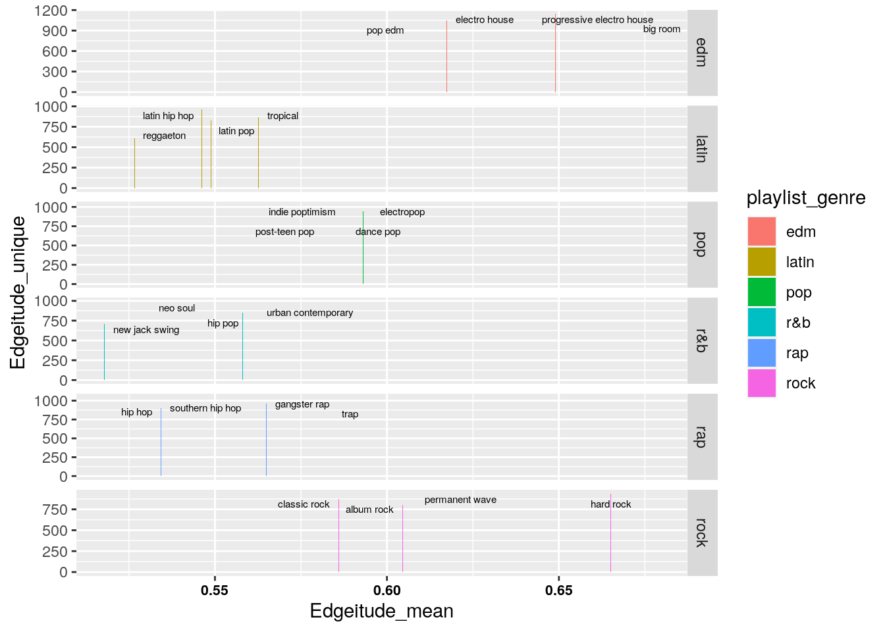

January 1, 0001
Setup and Packages used
Below are the packages I used in my local RStudio environment. SpotifyR being the most unique towards this project.
# Setup
library(devtools)
library(tidyverse)
library(knitr)
library(dplyr)
library(corrplot)
library(factoextra)
library(ggrepel)
library(FactoMineR)Part 0: Introduction (5pts)
-My Original Plan was to use my OWN spotify data via using the SpotifyR package API, combining my 2020 and 2021 datas. However there is a queue time associated with pulling data from Spotify. So despite my requesting my data many moons ago, Spotify still hasn’t sent me anything :C.
My goal here it to take a spotify dataset containing over 32,000 individual songs, each with associated organizational variables and predictive score variables. With the dataset, I want to tidy, split, join, wrangle, and visualize the data towards a meaningful interpretation. I make sure to define the variables below. I also used a key to get SpotifyR up and running, but I dont think I will use it all that much.
This spotify data very much interested me because, like many, I am an avid spotify listener, and always have wanted a peak behind the scenes. As one who is new to data-wrangling, I’m not sure what I expect to find. If I had to speculate I would expect there to be a correlation between the popularity of a song and the danceability? I also want to make a new variable using mutate to come up with a new metric for songs? Maybe something funny! Let’s get started!
Part 1: Tidying things up (10pts)
- Luckily this data is already tidy, so all I had to do was read the data from github.
spotify <- readr::read_csv("https://raw.githubusercontent.com/nairrj/DataWrangling/main/spotify_songs.csv")
glimpse(spotify)## Rows: 32,833
## Columns: 23
## $ track_id <chr> "6f807x0ima9a1j3VPbc7VN", "0r7CVbZTWZgbTCYdf…
## $ track_name <chr> "I Don't Care (with Justin Bieber) - Loud Lu…
## $ track_artist <chr> "Ed Sheeran", "Maroon 5", "Zara Larsson", "T…
## $ track_popularity <dbl> 66, 67, 70, 60, 69, 67, 62, 69, 68, 67, 58, …
## $ track_album_id <chr> "2oCs0DGTsRO98Gh5ZSl2Cx", "63rPSO264uRjW1X5E…
## $ track_album_name <chr> "I Don't Care (with Justin Bieber) [Loud Lux…
## $ track_album_release_date <chr> "2019-06-14", "2019-12-13", "2019-07-05", "2…
## $ playlist_name <chr> "Pop Remix", "Pop Remix", "Pop Remix", "Pop …
## $ playlist_id <chr> "37i9dQZF1DXcZDD7cfEKhW", "37i9dQZF1DXcZDD7c…
## $ playlist_genre <chr> "pop", "pop", "pop", "pop", "pop", "pop", "p…
## $ playlist_subgenre <chr> "dance pop", "dance pop", "dance pop", "danc…
## $ danceability <dbl> 0.748, 0.726, 0.675, 0.718, 0.650, 0.675, 0.…
## $ energy <dbl> 0.916, 0.815, 0.931, 0.930, 0.833, 0.919, 0.…
## $ key <dbl> 6, 11, 1, 7, 1, 8, 5, 4, 8, 2, 6, 8, 1, 5, 5…
## $ loudness <dbl> -2.634, -4.969, -3.432, -3.778, -4.672, -5.3…
## $ mode <dbl> 1, 1, 0, 1, 1, 1, 0, 0, 1, 1, 1, 1, 1, 0, 0,…
## $ speechiness <dbl> 0.0583, 0.0373, 0.0742, 0.1020, 0.0359, 0.12…
## $ acousticness <dbl> 0.10200, 0.07240, 0.07940, 0.02870, 0.08030,…
## $ instrumentalness <dbl> 0.00e+00, 4.21e-03, 2.33e-05, 9.43e-06, 0.00…
## $ liveness <dbl> 0.0653, 0.3570, 0.1100, 0.2040, 0.0833, 0.14…
## $ valence <dbl> 0.518, 0.693, 0.613, 0.277, 0.725, 0.585, 0.…
## $ tempo <dbl> 122.036, 99.972, 124.008, 121.956, 123.976, …
## $ duration_ms <dbl> 194754, 162600, 176616, 169093, 189052, 1630…Variables:
ORGANIZATIONAL VARIABLES
track_id: Specific number for each track
track_name: Track name
track_artist: Track’s artist
track_popularity: Percentile of track popularity
track_album_id: Specific number for each album
track_album_name: Album name
track_album_release_date: Release date in YYYY-MM-DD
playlist_name: Playlist name
Playlist_id: Specific number for each playlist
Playlist_genre: Main genre group of playlist (ex. edm)
Playlist_subgenre: Subgenre of playlist (ex. big room)
PREDICTIVE SCORE VARIABLES
danceability: score 1 to 0, intensity of rhythm
energy: Score 1 to 0, intensity of volume, lack of dynamics
key: value starting at 0, 0 corresponding to middle C
loudness: absolute value corresponding to amplitude
mode: major or minor, 0 or 1
speechiness: score 1 to 0, detects vowel sounds
vacousticness: score 1 to 0, predicts if track is acoustic
instrumentalness: score 1 to 0, how non-vocal is track
liveness: score 1 to 0, estimated live performance
valence: score 1 to 0, estimated happiness of track
tempo: estimated tempo of track. Sometimes is doubled for cut time?
duration_ms: duration of track in milliseconds(ms)
Part 2: Joining/ Merging (10pts)
- Since I’m working with one dataset here. Nathaniel said it would be ok to split and rejoin from one dataset.
-Here I am splitting the “spotify” dataset by omitting different columns creating two new datasets sharing only track_id.
spotify_music_logs <- spotify %>% select(-c(instrumentalness,
danceability, energy, key, loudness, mode, speechiness, acousticness,
liveness, valence, tempo, duration_ms))
spotify_music_feels <- spotify %>% select(-c(track_name, track_artist,
track_popularity, track_album_id, track_album_name, track_album_release_date,
playlist_name, playlist_id, playlist_genre, playlist_subgenre))
glimpse(spotify_music_logs)## Rows: 32,833
## Columns: 11
## $ track_id <chr> "6f807x0ima9a1j3VPbc7VN", "0r7CVbZTWZgbTCYdf…
## $ track_name <chr> "I Don't Care (with Justin Bieber) - Loud Lu…
## $ track_artist <chr> "Ed Sheeran", "Maroon 5", "Zara Larsson", "T…
## $ track_popularity <dbl> 66, 67, 70, 60, 69, 67, 62, 69, 68, 67, 58, …
## $ track_album_id <chr> "2oCs0DGTsRO98Gh5ZSl2Cx", "63rPSO264uRjW1X5E…
## $ track_album_name <chr> "I Don't Care (with Justin Bieber) [Loud Lux…
## $ track_album_release_date <chr> "2019-06-14", "2019-12-13", "2019-07-05", "2…
## $ playlist_name <chr> "Pop Remix", "Pop Remix", "Pop Remix", "Pop …
## $ playlist_id <chr> "37i9dQZF1DXcZDD7cfEKhW", "37i9dQZF1DXcZDD7c…
## $ playlist_genre <chr> "pop", "pop", "pop", "pop", "pop", "pop", "p…
## $ playlist_subgenre <chr> "dance pop", "dance pop", "dance pop", "danc…glimpse(spotify_music_feels)## Rows: 32,833
## Columns: 13
## $ track_id <chr> "6f807x0ima9a1j3VPbc7VN", "0r7CVbZTWZgbTCYdfa2P31", …
## $ danceability <dbl> 0.748, 0.726, 0.675, 0.718, 0.650, 0.675, 0.449, 0.5…
## $ energy <dbl> 0.916, 0.815, 0.931, 0.930, 0.833, 0.919, 0.856, 0.9…
## $ key <dbl> 6, 11, 1, 7, 1, 8, 5, 4, 8, 2, 6, 8, 1, 5, 5, 0, 1, …
## $ loudness <dbl> -2.634, -4.969, -3.432, -3.778, -4.672, -5.385, -4.7…
## $ mode <dbl> 1, 1, 0, 1, 1, 1, 0, 0, 1, 1, 1, 1, 1, 0, 0, 1, 0, 0…
## $ speechiness <dbl> 0.0583, 0.0373, 0.0742, 0.1020, 0.0359, 0.1270, 0.06…
## $ acousticness <dbl> 0.10200, 0.07240, 0.07940, 0.02870, 0.08030, 0.07990…
## $ instrumentalness <dbl> 0.00e+00, 4.21e-03, 2.33e-05, 9.43e-06, 0.00e+00, 0.…
## $ liveness <dbl> 0.0653, 0.3570, 0.1100, 0.2040, 0.0833, 0.1430, 0.17…
## $ valence <dbl> 0.518, 0.693, 0.613, 0.277, 0.725, 0.585, 0.152, 0.3…
## $ tempo <dbl> 122.036, 99.972, 124.008, 121.956, 123.976, 124.982,…
## $ duration_ms <dbl> 194754, 162600, 176616, 169093, 189052, 163049, 1876…I then use a full_join to re-merge the spotify_music_feels and spotify_music_logs datasets into a new dataset called FrankenSpotify.
I used a full_join because I wanted to join all variables in both datasets by the track_id variable.
Everything in the dataset was retained. However there were double the cases! So I removed the duplicates based on track_id. I chose track_id becase, unlinke track_name, it is a discrete value for each track. (Ex. there are some songs with the same name and release date, but different artists).
I removed the duplicates here
FrankenSpotify <- full_join(spotify_music_feels, spotify_music_logs,
by = "track_id")
Spotify_dataset <- FrankenSpotify[!duplicated(FrankenSpotify$track_id),
]
glimpse(Spotify_dataset)## Rows: 28,356
## Columns: 23
## $ track_id <chr> "6f807x0ima9a1j3VPbc7VN", "0r7CVbZTWZgbTCYdf…
## $ danceability <dbl> 0.748, 0.726, 0.675, 0.718, 0.650, 0.675, 0.…
## $ energy <dbl> 0.916, 0.815, 0.931, 0.930, 0.833, 0.919, 0.…
## $ key <dbl> 6, 11, 1, 7, 1, 8, 5, 4, 8, 2, 6, 8, 1, 5, 5…
## $ loudness <dbl> -2.634, -4.969, -3.432, -3.778, -4.672, -5.3…
## $ mode <dbl> 1, 1, 0, 1, 1, 1, 0, 0, 1, 1, 1, 1, 1, 0, 0,…
## $ speechiness <dbl> 0.0583, 0.0373, 0.0742, 0.1020, 0.0359, 0.12…
## $ acousticness <dbl> 0.10200, 0.07240, 0.07940, 0.02870, 0.08030,…
## $ instrumentalness <dbl> 0.00e+00, 4.21e-03, 2.33e-05, 9.43e-06, 0.00…
## $ liveness <dbl> 0.0653, 0.3570, 0.1100, 0.2040, 0.0833, 0.14…
## $ valence <dbl> 0.518, 0.693, 0.613, 0.277, 0.725, 0.585, 0.…
## $ tempo <dbl> 122.036, 99.972, 124.008, 121.956, 123.976, …
## $ duration_ms <dbl> 194754, 162600, 176616, 169093, 189052, 1630…
## $ track_name <chr> "I Don't Care (with Justin Bieber) - Loud Lu…
## $ track_artist <chr> "Ed Sheeran", "Maroon 5", "Zara Larsson", "T…
## $ track_popularity <dbl> 66, 67, 70, 60, 69, 67, 62, 69, 68, 67, 58, …
## $ track_album_id <chr> "2oCs0DGTsRO98Gh5ZSl2Cx", "63rPSO264uRjW1X5E…
## $ track_album_name <chr> "I Don't Care (with Justin Bieber) [Loud Lux…
## $ track_album_release_date <chr> "2019-06-14", "2019-12-13", "2019-07-05", "2…
## $ playlist_name <chr> "Pop Remix", "Pop Remix", "Pop Remix", "Pop …
## $ playlist_id <chr> "37i9dQZF1DXcZDD7cfEKhW", "37i9dQZF1DXcZDD7c…
## $ playlist_genre <chr> "pop", "pop", "pop", "pop", "pop", "pop", "p…
## $ playlist_subgenre <chr> "dance pop", "dance pop", "dance pop", "danc…- So, down the line I found some issues. So I tested for NAs and removed them. This gives the final raw dataset Final_Spotify.
any(is.na(FrankenSpotify))## [1] TRUEFinal_Spotify <- Spotify_dataset %>% drop_na()
glimpse(Final_Spotify)## Rows: 28,352
## Columns: 23
## $ track_id <chr> "6f807x0ima9a1j3VPbc7VN", "0r7CVbZTWZgbTCYdf…
## $ danceability <dbl> 0.748, 0.726, 0.675, 0.718, 0.650, 0.675, 0.…
## $ energy <dbl> 0.916, 0.815, 0.931, 0.930, 0.833, 0.919, 0.…
## $ key <dbl> 6, 11, 1, 7, 1, 8, 5, 4, 8, 2, 6, 8, 1, 5, 5…
## $ loudness <dbl> -2.634, -4.969, -3.432, -3.778, -4.672, -5.3…
## $ mode <dbl> 1, 1, 0, 1, 1, 1, 0, 0, 1, 1, 1, 1, 1, 0, 0,…
## $ speechiness <dbl> 0.0583, 0.0373, 0.0742, 0.1020, 0.0359, 0.12…
## $ acousticness <dbl> 0.10200, 0.07240, 0.07940, 0.02870, 0.08030,…
## $ instrumentalness <dbl> 0.00e+00, 4.21e-03, 2.33e-05, 9.43e-06, 0.00…
## $ liveness <dbl> 0.0653, 0.3570, 0.1100, 0.2040, 0.0833, 0.14…
## $ valence <dbl> 0.518, 0.693, 0.613, 0.277, 0.725, 0.585, 0.…
## $ tempo <dbl> 122.036, 99.972, 124.008, 121.956, 123.976, …
## $ duration_ms <dbl> 194754, 162600, 176616, 169093, 189052, 1630…
## $ track_name <chr> "I Don't Care (with Justin Bieber) - Loud Lu…
## $ track_artist <chr> "Ed Sheeran", "Maroon 5", "Zara Larsson", "T…
## $ track_popularity <dbl> 66, 67, 70, 60, 69, 67, 62, 69, 68, 67, 58, …
## $ track_album_id <chr> "2oCs0DGTsRO98Gh5ZSl2Cx", "63rPSO264uRjW1X5E…
## $ track_album_name <chr> "I Don't Care (with Justin Bieber) [Loud Lux…
## $ track_album_release_date <chr> "2019-06-14", "2019-12-13", "2019-07-05", "2…
## $ playlist_name <chr> "Pop Remix", "Pop Remix", "Pop Remix", "Pop …
## $ playlist_id <chr> "37i9dQZF1DXcZDD7cfEKhW", "37i9dQZF1DXcZDD7c…
## $ playlist_genre <chr> "pop", "pop", "pop", "pop", "pop", "pop", "p…
## $ playlist_subgenre <chr> "dance pop", "dance pop", "dance pop", "danc…Part 3: Wrangling (40 pts)
I begin with the mutation. My friends and I wanted to make a variable that accounts for the “edginess” of the track. We begin with a few examples, Linkin park, Evanescance, classically edgy stuff, searching for variables that were high or low. Below are a few examples of querys aimed at exploring the dataset.
After some discussion, we decided that all the edgy tracks were high in energy, low in danceability, and low in valence.
Hencefore the term “Edgeitude” is: (((1-valence) + (energy) + (1-danceability))/4 + 0.2))
Streamlined_Data <- spotify %>% select(-c(track_album_id, track_album_name,
playlist_name, playlist_id, key, loudness, speechiness, acousticness,
instrumentalness, liveness, duration_ms, mode))Edge_spotifydata <- Streamlined_Data %>% mutate(Edgeitude = (((1 -
valence) + (energy) + (1 - danceability))/4 + 0.2))Edge_spotifydata %>% filter(track_artist == "Linkin Park")## # A tibble: 21 x 12
## track_id track_name track_artist track_popularity track_album_rel…
## <chr> <chr> <chr> <dbl> <chr>
## 1 3aYBjxT… Final Mas… Linkin Park 63 2014-06-13
## 2 7oVEtyu… BURN IT D… Linkin Park 73 2012-06-20
## 3 1r1fPuh… CASTLE OF… Linkin Park 71 2012-06-20
## 4 6n8TMVy… Breaking … Linkin Park 65 2003-03-24
## 5 3fjmSxt… Somewhere… Linkin Park 69 2003-03-24
## 6 4Yf5bqU… Faint Linkin Park 69 2003-03-24
## 7 0UFDKFq… Bleed It … Linkin Park 72 2007-05-14
## 8 60a0Rd6… In the End Linkin Park 83 2000-10-24
## 9 2nLtzop… Numb Linkin Park 81 2003-03-24
## 10 4Sxx1wd… Shadow of… Linkin Park 50 2007-05-14
## # … with 11 more rows, and 7 more variables: playlist_genre <chr>,
## # playlist_subgenre <chr>, danceability <dbl>, energy <dbl>, valence <dbl>,
## # tempo <dbl>, Edgeitude <dbl>Edge_spotifydata %>% filter(track_artist == "Evanescence") %>%
group_by(energy, danceability) %>% arrange(Edgeitude)## # A tibble: 4 x 12
## # Groups: energy, danceability [4]
## track_id track_name track_artist track_popularity track_album_rel…
## <chr> <chr> <chr> <dbl> <chr>
## 1 1yYLeHI… What You … Evanescence 0 2011
## 2 3PYdxID… My Immort… Evanescence 57 2003-01-01
## 3 3UygY7q… Going Und… Evanescence 69 2003-01-01
## 4 0COqiPh… Bring Me … Evanescence 78 2003-01-01
## # … with 7 more variables: playlist_genre <chr>, playlist_subgenre <chr>,
## # danceability <dbl>, energy <dbl>, valence <dbl>, tempo <dbl>,
## # Edgeitude <dbl>glimpse(Edge_spotifydata)## Rows: 32,833
## Columns: 12
## $ track_id <chr> "6f807x0ima9a1j3VPbc7VN", "0r7CVbZTWZgbTCYdf…
## $ track_name <chr> "I Don't Care (with Justin Bieber) - Loud Lu…
## $ track_artist <chr> "Ed Sheeran", "Maroon 5", "Zara Larsson", "T…
## $ track_popularity <dbl> 66, 67, 70, 60, 69, 67, 62, 69, 68, 67, 58, …
## $ track_album_release_date <chr> "2019-06-14", "2019-12-13", "2019-07-05", "2…
## $ playlist_genre <chr> "pop", "pop", "pop", "pop", "pop", "pop", "p…
## $ playlist_subgenre <chr> "dance pop", "dance pop", "dance pop", "danc…
## $ danceability <dbl> 0.748, 0.726, 0.675, 0.718, 0.650, 0.675, 0.…
## $ energy <dbl> 0.916, 0.815, 0.931, 0.930, 0.833, 0.919, 0.…
## $ valence <dbl> 0.518, 0.693, 0.613, 0.277, 0.725, 0.585, 0.…
## $ tempo <dbl> 122.036, 99.972, 124.008, 121.956, 123.976, …
## $ Edgeitude <dbl> 0.61250, 0.54900, 0.61075, 0.68375, 0.56450,…Now onto calculating some summary statistics!
I begin by calculating the old-fashioned way:
# danceability
n_distinct(Edge_spotifydata$danceability)## [1] 822mean(Edge_spotifydata$danceability)## [1] 0.6548495sd(Edge_spotifydata$danceability)## [1] 0.1450853max(Edge_spotifydata$danceability)## [1] 0.983min(Edge_spotifydata$danceability)## [1] 0cor(Edge_spotifydata$Edgeitude, Edge_spotifydata$danceability)## [1] -0.6798365I then use a summarize_if function to calculate n, mean, sd, median, max, and min for all numeric columns.
I chose these stats because I wanted to observe the edgitude max, min, and mean mostly. Sd seems useful in the long run for graphical applications?
I then pivot the table longer so its easier to read.
Some of the datasets had the axis switched, so I used a transpose prior to viewing.
Here are the ungrouped stats.
Edge_spotifydata %>% summarize_if(is.numeric, list(unique = n_distinct,
mean = mean, sd = sd, median = median, max = max, min = min),
na.rm = T) %>% pivot_longer(c(contains("_")), names_to = "variable_stat",
values_to = "values")## # A tibble: 36 x 2
## variable_stat values
## <chr> <dbl>
## 1 track_popularity_unique 101
## 2 danceability_unique 822
## 3 energy_unique 952
## 4 valence_unique 1362
## 5 tempo_unique 17684
## 6 Edgeitude_unique 3546
## 7 track_popularity_mean 42.5
## 8 danceability_mean 0.655
## 9 energy_mean 0.699
## 10 valence_mean 0.511
## # … with 26 more rowsI then compute the summary statistics for all genres, edm, and rock respectively. This helped me explore the dataset and practice some grouping and filtering skills.
Here I group by two categorical variables. Playlist_genre and playlist_subgenre.
Summary_stats_genre <- Edge_spotifydata %>% group_by(playlist_genre,
playlist_subgenre) %>% summarize_if(is.numeric, list(mean = mean,
unique = n_distinct, max = max, sd = sd, median = median,
min = min), na.rm = T)
Summary_stats_genre_transpose <- as.data.frame(t(Summary_stats_genre))
head(Summary_stats_genre_transpose)## V1 V2 V3
## playlist_genre edm edm edm
## playlist_subgenre big room electro house pop edm
## track_popularity_mean 32.28275 35.51026 45.68622
## danceability_mean 0.6195506 0.7016281 0.6477436
## V4 V5 V6
## playlist_genre edm latin latin
## playlist_subgenre progressive electro house latin hip hop latin pop
## track_popularity_mean 26.86788 43.45109 51.09984
## danceability_mean 0.6459077 0.7231353 0.6861109
## V7 V8 V9 V10 V11
## playlist_genre latin latin pop pop pop
## playlist_subgenre reggaeton tropical dance pop electropop indie poptimism
## track_popularity_mean 52.86934 43.32764 52.07935 42.72514 42.47548
## danceability_mean 0.7609536 0.6921326 0.6557519 0.6386090 0.6295963
## V12 V13 V14 V15
## playlist_genre pop r&b r&b r&b
## playlist_subgenre post-teen pop hip pop neo soul new jack swing
## track_popularity_mean 56.82551 53.84475 32.68723 28.03266
## danceability_mean 0.6356262 0.6754236 0.6450153 0.7233645
## V16 V17 V18
## playlist_genre r&b rap rap
## playlist_subgenre urban contemporary gangster rap hip hop
## track_popularity_mean 50.52384 35.13923 53.77307
## danceability_mean 0.6519217 0.7240254 0.7196278
## V19 V20 V21 V22
## playlist_genre rap rap rock rock
## playlist_subgenre southern hip hop trap album rock classic rock
## track_popularity_mean 36.44597 50.30829 38.32207 40.80941
## danceability_mean 0.7146806 0.7154051 0.5250197 0.5453958
## V23 V24
## playlist_genre rock rock
## playlist_subgenre hard rock permanent wave
## track_popularity_mean 35.84108 54.00090
## danceability_mean 0.4880835 0.5307240
## [ reached 'max' / getOption("max.print") -- omitted 2 rows ]- Here I filter for edm and group by subgenre.
Summary_stats_edm <- Edge_spotifydata %>% filter(playlist_genre ==
"edm") %>% group_by(playlist_subgenre) %>% summarize_if(is.numeric,
list(mean = mean, unique = n_distinct, max = max, sd = sd,
median = median, min = min), na.rm = T)
Summary_stats_edm_transpose <- as.data.frame(t(Summary_stats_edm))
head(Summary_stats_edm_transpose)## V1 V2 V3
## playlist_subgenre big room electro house pop edm
## track_popularity_mean 32.28275 35.51026 45.68622
## danceability_mean 0.6195506 0.7016281 0.6477436
## energy_mean 0.8603159 0.8000437 0.7425432
## valence_mean 0.3240909 0.4287008 0.4647723
## tempo_mean 128.8729 124.9764 123.1691
## V4
## playlist_subgenre progressive electro house
## track_popularity_mean 26.86788
## danceability_mean 0.6459077
## energy_mean 0.8162062
## valence_mean 0.3745059
## tempo_mean 126.5387Here I filter for rock and group by subgenre.
I include the whole dataset for the rock genre stats, just to show how I looked at the values. Hope this helps!
Summary_stats_rock <- Edge_spotifydata %>% filter(playlist_genre ==
"rock") %>% group_by(playlist_subgenre) %>% summarize_if(is.numeric,
list(mean = mean, unique = n_distinct, max = max, sd = sd,
median = median, min = min), na.rm = T)
Summary_stats_rock_transpose <- as.data.frame(t(Summary_stats_rock))
Summary_stats_rock_transpose## V1 V2 V3 V4
## playlist_subgenre album rock classic rock hard rock permanent wave
## track_popularity_mean 38.32207 40.80941 35.84108 54.00090
## danceability_mean 0.5250197 0.5453958 0.4880835 0.5307240
## energy_mean 0.6641887 0.6992400 0.8285407 0.7096828
## valence_mean 0.5208444 0.6099583 0.4800577 0.5451033
## tempo_mean 122.4643 123.6121 128.0843 124.8764
## Edgeitude_mean 0.6045812 0.5859715 0.6650999 0.6084639
## track_popularity_unique 86 84 84 88
## danceability_unique 501 495 484 482
## energy_unique 580 556 463 536
## valence_unique 633 642 653 628
## tempo_unique 1052 1248 1430 1085
## Edgeitude_unique 806 871 939 818
## track_popularity_max 85 83 83 95
## danceability_max 0.933 0.952 0.917 0.956
## energy_max 0.998 0.993 0.997 0.994
## valence_max 0.977 0.991 0.975 0.977
## tempo_max 208.571 207.639 205.470 209.257
## Edgeitude_max 0.83100 0.83550 0.89810 0.82075
## track_popularity_sd 24.47111 25.34829 24.46322 20.45566
## danceability_sd 0.1517547 0.1408448 0.1207996 0.1427020
## energy_sd 0.2075264 0.1822249 0.1556374 0.1946141
## valence_sd 0.2458816 0.2231761 0.2006913 0.2325534
## tempo_sd 28.64933 26.19718 29.26233 27.60729
## Edgeitude_sd 0.09409149 0.08806474 0.08201429 0.08768072
## [ reached 'max' / getOption("max.print") -- omitted 12 rows ]Edge_spotifydata %>% group_by(track_name, Edgeitude) %>% arrange(desc(Edgeitude))## # A tibble: 32,833 x 12
## # Groups: track_name, Edgeitude [27,687]
## track_id track_name track_artist track_popularity track_album_rel…
## <chr> <chr> <chr> <dbl> <chr>
## 1 6ADPydL… Forest Ra… Rain Record… 75 2019-09-06
## 2 37TdJ5E… Chill Wav… Pinetree Way 57 2019-10-03
## 3 5CwOUoo… Rain Fore… Nature Soun… 52 2011-02-16
## 4 0rtT2Dm… Suburban … Aquagirl 57 2019-05-23
## 5 3t4ZPAn… Feed The … Red 43 2011-02-01
## 6 1Ksf0mo… Nightfall… Shaman 50 2019-09-12
## 7 3exfZvh… Legend VINAI 36 2015-05-04
## 8 7oOeB6z… Gentle Wa… Pinetree Way 48 2019-10-03
## 9 0bqz8PQ… Beast PURARI 38 2019-06-05
## 10 6fsth2h… AVA Garmiani 48 2019-09-27
## # … with 32,823 more rows, and 7 more variables: playlist_genre <chr>,
## # playlist_subgenre <chr>, danceability <dbl>, energy <dbl>, valence <dbl>,
## # tempo <dbl>, Edgeitude <dbl>Summary:
I began by mutating the “edgeitude” variable in terms of existing spotify variables. I then computed the summary statistics n, mean, sd, median, max, and min for all numeric columns using the summarize function. I explored different subgenres specifically with some basic filtering and grouping. There is a lot to look at (for me anyways). Admittedly, I was most interested in the edgeitude variable. After looking, it seemed that the genre with the highest mean edgeitude was edm!
Least edgy song: Mosaic(Skit) by Psalm Trees
Most edgy song: Feed the machine by Red
TECHNICALLY the edgiest of all songs was Forest Rain by Forest rain recordings… Which makes some sense based on the edgeitude metric? I excluded all white noise things. I guess nothing is more edgy than listening to nature?
Part 4: Visualizing (30 pts)
- Here is my correlation heatmap. (like we did in class)
Edge_spotifydata %>% select_if(is.numeric) %>% cor %>% as.data.frame %>%
rownames_to_column %>% pivot_longer(-1) %>% ggplot(aes(rowname,
name, fill = value)) + geom_tile() + geom_text(aes(label = round(value,
2))) + xlab("") + ylab("") + coord_fixed() + scale_fill_gradient2(low = "red",
mid = "white", high = "blue")- I also found this neat package for correlation heatmaps and matricies. Not relevant for the grade, just thought it was a neat, alternate way of diplaying the results.
corr_Edge_spotifydata <- select(Edge_spotifydata, track_popularity,
danceability, energy, valence, tempo, Edgeitude)
corrplot(cor(corr_Edge_spotifydata), type = "upper")- What these correlation heatmaps are telling us:
- Strong inverse correlation between Edgeitude and danceability, Edgeitude and valence. Moderate positive correlation between Edgeitude and energy. The correlations observed with the edgeitude variable make sense, as Edgeitude is defined in terms of the danceability, valence, and energy variables.
- To reiterate: “Edgeitude” is: (((1-valence) + (energy) + (1-danceability))/4 + 0.2))
- Mild-moderate positive correlation between valence and danceability. Happy songs tend to be groove-worthy!
- Mild positive correlation between valence and energy. I suppose happy songs tend to have some drive to their beats.
- Track popularity and danceability are positively correlated, which is neat. Negatively correlated to energy and Edgeitude. Which means popular tracks tend to be up-beat.
-Box plot Across Genre
ggplot(data = Edge_spotifydata, mapping = aes(x = Edgeitude,
y = playlist_genre)) + geom_boxplot(aes(color = playlist_genre),
outlier.shape = NA) + stat_summary(fun.y = mean, geom = "point",
size = 2, aes(shape = "blue", color = "blue")) + theme_bw()-Box plot Across subgenre
ggplot(data = Edge_spotifydata, mapping = aes(x = Edgeitude,
y = playlist_subgenre)) + geom_boxplot(aes(color = playlist_genre),
outlier.shape = NA) + stat_summary(fun.y = mean, geom = "point",
size = 1.5, aes(shape = "blue", color = "blue")) + theme_bw()These two boxplots look at the trends in edgeitude values broken down by genre and subgenre, respectively. I tampered a lot with the themes and colors to make this digestable (hopefully). I used the stat_summary function in both of these boxplots (I think thats what you meant in the rubric?).
The first boxplot shows edm as the edgiest genre, followed by rock. The least edgy genres seem to be r&b and latin music.
The second boxplot shows hard rock and big room as the two most edgy genres. Hard rock appears to have the most edgy outliers, which must be the “feed the machine” song found in the data wrangling section.
column plot mapping mean Edgeitude value across genre and sub genre.
ggplot(Summary_stats_genre, aes(x = Edgeitude_mean, y = Edgeitude_unique,
fill = playlist_genre)) + theme(axis.text.x = element_text(face = "bold",
color = "black", size = 8, angle = 0)) + geom_col(position = "dodge") +
geom_text_repel(aes(label = playlist_subgenre), size = 2) +
facet_grid(playlist_genre ~ ., scales = "free")
Whereas the boxplots looked at the Edgeitude value across genres, I wanted to display the mean values per subgenre via faceting (I think faceting is cool).
I installed ggrepel to keep the subgenre names nice and clean-ish.
Edm subgenres boasted the highest mean edgeitude values, big room at the pinnacle. It makes sense that pop edm is similar to pop!
Latin subgenres had a tighter distribution of average edgeitude values.
Pop subgenres had VERY similar edgeitude mean values, meaning these subgenres were all around as edgy as one another.
R & B had the least mean edgeitude subgenres. New jack swing being the least mean edgy subgenre.
Rap was analogous to R & B, trap being its most edgy
rock, like edm, had a very wide distribution of mean edgy values. Hard rock is the second most edgy subgenre. I think it makes sense that classic rock was the least edgy of the rock genres.
Overall, these findings seem to support the finding from the boxplots!
Part 5: Dimensionality Reduction (30 pts)
-As one who is new to PCA, I was a bit confused where to go with this section. I emailed Woodward who said
- “If you are doing PCA, all you need is to run it, choose the number of PCs to retain, interpret them (in terms of the original variables and in terms of which observations are high/low on them), and create some kind of visualization of them (no need to do anything else)!”
EdgeSpotifydata_nums <- Edge_spotifydata %>% select_if(is.numeric) %>%
scale
rownames(EdgeSpotifydata_nums) <- Edge_spotifydata$track_name
Edge_pca <- princomp(EdgeSpotifydata_nums)
names(Edge_pca)## [1] "sdev" "loadings" "center" "scale" "n.obs" "scores" "call"EdgePrin <- princomp(EdgeSpotifydata_nums)
summary(EdgePrin, loadings = T)## Importance of components:
## Comp.1 Comp.2 Comp.3 Comp.4 Comp.5 Comp.6
## Standard deviation 1.5154642 1.1045047 1.0002640 0.9312400 0.7845501 0
## Proportion of Variance 0.3827836 0.2033280 0.1667598 0.1445391 0.1025896 0
## Cumulative Proportion 0.3827836 0.5861116 0.7528713 0.8974104 1.0000000 1
##
## Loadings:
## Comp.1 Comp.2 Comp.3 Comp.4 Comp.5 Comp.6
## track_popularity 0.111 0.270 0.820 0.493
## danceability 0.507 -0.793 0.302
## energy -0.236 -0.721 0.505 -0.165 -0.377
## valence 0.470 -0.508 0.527 0.486
## tempo -0.194 -0.380 0.558 -0.673 -0.232
## Edgeitude -0.646 0.200 -0.108 0.728fviz_eig(EdgePrin)
get_eigenvalue(EdgePrin)## eigenvalue variance.percent cumulative.variance.percent
## Dim.1 2.2966318 38.27836 38.27836
## Dim.2 1.2199307 20.33280 58.61116
## Dim.3 1.0005281 16.67598 75.28713
## Dim.4 0.8672080 14.45391 89.74104
## Dim.5 0.6155188 10.25896 100.00000
## Dim.6 0.0000000 0.00000 100.00000- According to the Scree Plot and this table showing the PC and cumulative variance percent. I should only need three PC. I base this on Kaiser’s rule (PC4 is below 1), that the scree plot elbow is between PC3 and PC4, and that PC1, PC2, and PC3 account for 75% of the variance in the dataset cumulatively.
Edge_pca$scores[, 1:4] %>% as.data.frame %>% top_n(3, Comp.1)## Comp.1 Comp.2 Comp.3 Comp.4
## Mosaic...Skit 4.703468 2.121289 -0.1421729 -1.4790631
## whereucomefrom. 4.792787 1.567670 -0.4909088 -0.6049211
## Village 4.506764 1.529163 -0.5461413 -0.5955743Edge_pca$scores[, 1:4] %>% as.data.frame %>% top_n(-3, Comp.1)## Comp.1 Comp.2 Comp.3 Comp.4
## Feed.The.Machine -5.848756 -0.4239988 1.1055373 -0.2665942
## Rain.Forest.and.Tropical.Beach.Sound -5.591919 0.1138499 0.4878866 1.1403184
## Forest.Rain -6.228514 -0.1745356 2.1370794 0.5642685Edge_pca$scores[, 1:4] %>% as.data.frame %>% top_n(3, Comp.2)## Comp.1 Comp.2 Comp.3 Comp.4
## goodbye.1 -2.202305 4.516092 0.3952426 0.1230137
## listen.before.i.go -0.957027 4.658534 0.5845184 -0.2121373
## Moon.River -1.553662 4.348261 0.2053748 -0.1774867
## Moon.River.1 -1.553662 4.348261 0.2053748 -0.1774867Edge_pca$scores[, 1:4] %>% as.data.frame %>% top_n(-3, Comp.2)## Comp.1 Comp.2 Comp.3
## X2.Of.Amerikaz.Most.Wanted....Explicit. 0.08376712 -3.060255 0.2935908
## One.Wine..feat..Major.Lazer..1 -0.81824993 -3.263654 0.3422793
## This.Is.Now.We.Do.It -1.38602907 -3.222893 0.3623459
## Comp.4
## X2.Of.Amerikaz.Most.Wanted....Explicit. -2.191966
## One.Wine..feat..Major.Lazer..1 -2.061755
## This.Is.Now.We.Do.It -1.980050Edge_pca$scores[, 1:4] %>% as.data.frame %>% top_n(3, Comp.3)## Comp.1 Comp.2 Comp.3 Comp.4
## Lover..Remix...feat..Shawn.Mendes. -1.566515 -0.05527165 3.246465 -1.569561
## Back.In.Black -1.179383 -0.89731714 3.024029 -1.014620
## Back.In.Black.1 -1.179383 -0.89731714 3.024029 -1.014620
## Back.In.Black.2 -1.179383 -0.89731714 3.024029 -1.014620
## Back.In.Black.3 -1.179383 -0.89731714 3.024029 -1.014620Edge_pca$scores[, 1:4] %>% as.data.frame %>% top_n(-3, Comp.3)## Comp.1 Comp.2 Comp.3 Comp.4
## Hi..How.re.You.Doin.. -3.5752718 4.210938 -3.658362 1.0695337
## Monsters.in.Your.Bedroom -0.2034318 1.878650 -2.775443 0.4247510
## The.Christmas.Song 0.8071297 3.862363 -2.848308 -0.9429987- These tables show the 3 highest and lowest track_names for PC1, PC2, and PC3 respectively.
Edge_spotifydata %>% filter(track_name == "Mosaic - Skit")## # A tibble: 1 x 12
## track_id track_name track_artist track_popularity track_album_rel…
## <chr> <chr> <chr> <dbl> <chr>
## 1 6eP7ORS… Mosaic - … Psalm Trees 49 2018-03-23
## # … with 7 more variables: playlist_genre <chr>, playlist_subgenre <chr>,
## # danceability <dbl>, energy <dbl>, valence <dbl>, tempo <dbl>,
## # Edgeitude <dbl>Edge_spotifydata %>% filter(track_name == "Feed The Machine")## # A tibble: 1 x 12
## track_id track_name track_artist track_popularity track_album_rel…
## <chr> <chr> <chr> <dbl> <chr>
## 1 3t4ZPAn… Feed The … Red 43 2011-02-01
## # … with 7 more variables: playlist_genre <chr>, playlist_subgenre <chr>,
## # danceability <dbl>, energy <dbl>, valence <dbl>, tempo <dbl>,
## # Edgeitude <dbl>- PC1 tends to approximate the edgeitude tradeoff, hence why feed the machine is very low. Check out the end of pt3! Those finding support this claim!
Edge_spotifydata %>% filter(track_name == "listen before i go")## # A tibble: 1 x 12
## track_id track_name track_artist track_popularity track_album_rel…
## <chr> <chr> <chr> <dbl> <chr>
## 1 0tMSssf… listen be… Billie Eili… 81 2019-03-29
## # … with 7 more variables: playlist_genre <chr>, playlist_subgenre <chr>,
## # danceability <dbl>, energy <dbl>, valence <dbl>, tempo <dbl>,
## # Edgeitude <dbl>Edge_spotifydata %>% filter(track_name == "2 Of Amerikaz Most Wanted")## # A tibble: 6 x 12
## track_id track_name track_artist track_popularity track_album_rel…
## <chr> <chr> <chr> <dbl> <chr>
## 1 5Ddu4Aa… 2 Of Amer… 2Pac 62 1996-02-13
## 2 1gnwmsT… 2 Of Amer… 2Pac 1 1998-01-01
## 3 5Ddu4Aa… 2 Of Amer… 2Pac 62 1996-02-13
## 4 6S5SJlN… 2 Of Amer… 2Pac 54 1998-01-01
## 5 3a5sW7r… 2 Of Amer… 2Pac 1 1998-11-24
## 6 5Ddu4Aa… 2 Of Amer… 2Pac 62 1996-02-13
## # … with 7 more variables: playlist_genre <chr>, playlist_subgenre <chr>,
## # danceability <dbl>, energy <dbl>, valence <dbl>, tempo <dbl>,
## # Edgeitude <dbl>- PC2 tends to work with a tradeoff in a whole mess of things. I think they have something to do with the popularity of the song and the valence. I think the graphical interpretations may help a lot. I think there are some versions of the songs, such as re-releases, that explains why the 2pac songs are extremely unpopular. Hence why they are rated so low. Billie Eilish “Listen before I go” is an extremely popular song with low energy. Hence why it is rated so high on PC2.
Edge_spotifydata %>% filter(track_name == "Back In Black")## # A tibble: 4 x 12
## track_id track_name track_artist track_popularity track_album_rel…
## <chr> <chr> <chr> <dbl> <chr>
## 1 08mG3Y1… Back In B… AC/DC 83 1980-07-25
## 2 08mG3Y1… Back In B… AC/DC 83 1980-07-25
## 3 08mG3Y1… Back In B… AC/DC 83 1980-07-25
## 4 08mG3Y1… Back In B… AC/DC 83 1980-07-25
## # … with 7 more variables: playlist_genre <chr>, playlist_subgenre <chr>,
## # danceability <dbl>, energy <dbl>, valence <dbl>, tempo <dbl>,
## # Edgeitude <dbl>Edge_spotifydata %>% filter(track_artist == "DREAMS COME TRUE")## # A tibble: 1 x 12
## track_id track_name track_artist track_popularity track_album_rel…
## <chr> <chr> <chr> <dbl> <chr>
## 1 51w6nRC… Hi, How'r… DREAMS COME… 0 1989-03-21
## # … with 7 more variables: playlist_genre <chr>, playlist_subgenre <chr>,
## # danceability <dbl>, energy <dbl>, valence <dbl>, tempo <dbl>,
## # Edgeitude <dbl>- PC3 tends to work with a tradeoff in track_popularity and energy. A lot of the songs were 2pac, Hi, How’re You Doin’? has a popularity of 0, which is strange. I think there are some versions of the songs, such as re-releases, that are extremely unpopular. Hence why they are rated so low. AC/DC “Back In Black” is an extremely popular song with low energy. Hence why it is rated so high on PC3.
fviz_pca_var(EdgePrin, col.var = "contrib", gradient.cols = c(),
repel = FALSE)- Overall I think this graphic supports what I suspected from the tabular data. PC1 is very edgeitude influenced, which makes sense given the top and lowest tracks from the results. PC2 and PC3 seem to have a lot of similarities. I think I was right in assuming that popularity influcned both components. But I didn’t even check the tempo, which appears to be a major contributor to PC2 score. The graph certainly helps account for the nuanced observed differences in the results! I’ll definelty keep factoextra around!